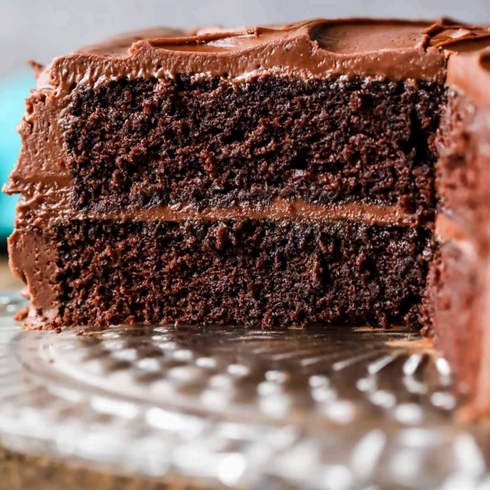

Chocolate cake

Description:
This chocolate cake recipe is not new to the blog. I originally published it several years ago after a ton of trial and error…a ton. In fact, it took me almost 5 months of failed cakes and frustration to perfect this recipe (not as bad as my macarons, but close!)!
Each ingredient in this chocolate cake recipe was carefully chosen to make for a moist and flavorful chocolate cake recipe. Each ingredient in this chocolate cake recipe was carefully chosen to make for a moist and flavorful chocolate cake recipe. Each ingredient in this chocolate cake recipe was carefully chosen to make for
a moist and flavorful chocolate cake recipe.
Ingredients:
- Buttermilk
- Oil and butter
- An extra egg yolk
- Hot water/coffee
Directions:
- Whisk the dry ingredients and sugars together in a large bowl.
- Stir in the butter and oil. The batter will be stiff at this stage–this is totally normal, just make sure all the dry ingredients are moistened.
- Pour in the hot coffee/water–slowly and carefully since it is very hot! I recommend scraping your bowl again at this stage just to make sure nothing is hiding on the bottom or sides. It’s important that the batter be smooth and uniform so that it bakes evenly.
- Divide the batter into your pans and bake. I love using parchment circles on the bottom of my pans (in addition to greasing/flouring them) to ensure there will be no sticking when it’s time to remove the cakes from the pans
- Cool the cakes in their pans for a few minutes, then invert to a cooling rack to cool completely.